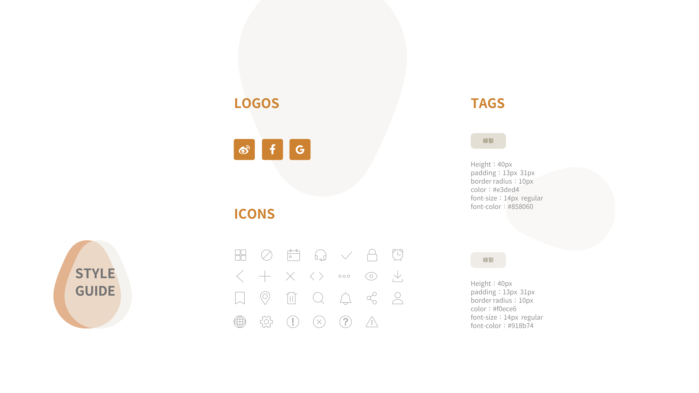

曆曆在日
曆與日一直以相輔相成的形式存在。因此「曆曆在日」結合傳統農民曆、現代記事日曆與療癒花卉插畫而成手機應用程式，期望將傳統農民曆與現代人生活融合，傳達「曆曆在日，日日在曆」的理念。
有別於一般日曆與農民曆應用程式，「曆曆在日」擁有功能性、便利性與美觀療癒的特色。結合個人行事曆與每日農民曆，簡單的左右滑動就能查看今日宜忌內容並即時紀錄下來。今日小卡則融合十二個月份的代表花卉，並以動態遊戲化方式呈現，透過收集每日小卡觀看花卉逐漸綻放的療癒過程，增加APP的使用頻率與互動趣味性。APP整體色彩以復古的對比配色搭配簡約易操作的介面設計，簡化了複雜的農民曆，期望能帶給使用者視覺與功能兼具的體驗，增加現代大眾對農民曆的使用意願。
Style Guide | Sitemap | Mock Up | Prototype
Oct. 2020
